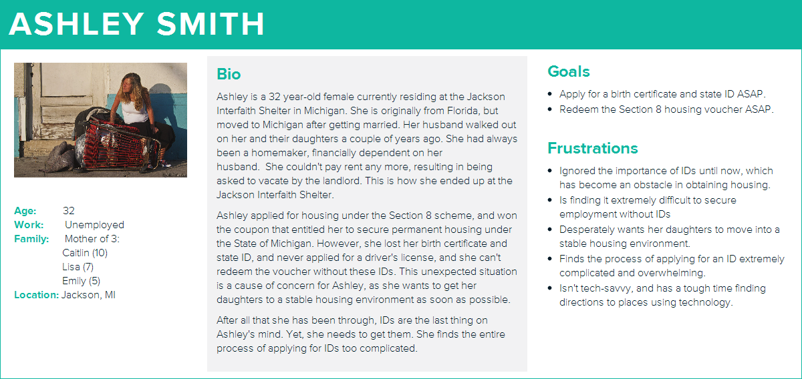
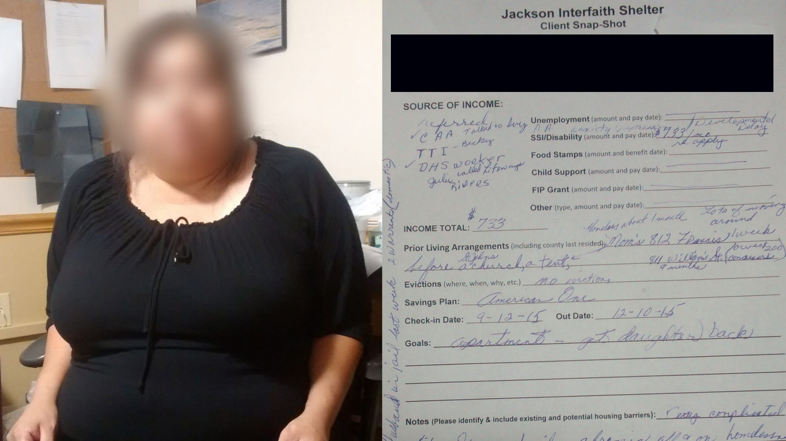
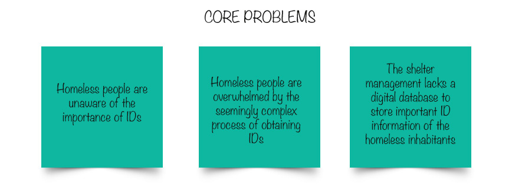
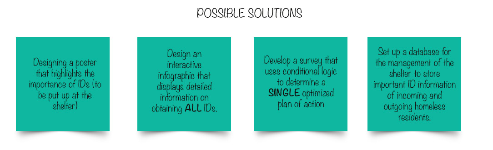
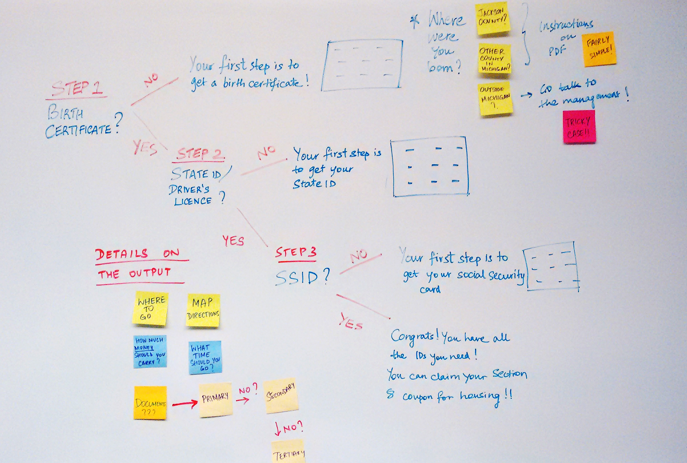

The Process

This was probably the most important part of the process, primarily due to the nature of our target users. These homeless people were already under trememdous emotional stress, with IDs being the least of their problems. The fact that the users were unable to articulate their problem with getting IDs was probably the biggest obstacle in the process.
- We had to resort to ethnographic research and subtle methods of need-finding, such as observing the homeless in their natural setting of the shelter, and gauging their goals and motivations, as shown below.
- We also conducted extensive stakeholder interviews with the homeless inhabitants as well as the management of the shelter.
- Also, we studied documentation about the inhabitants, tucked away on stacks of paper, to draw patterns in the kind of IDs the homeless people needed but lacked
After the stakeholders interviews, we create personas to define our target users. One of our brave participants even allowed us to share her story (anonymously, of course.)
 
After analysing the data collected from the contextual inquiry, we narrowed down the issues to three fundamental problems, and decided to tackle each one individually.
We determined that there were three main phases to get an ID: pre-application, applying, and in-process. The most critical phase was in pre-application. We narrowed the important IDS down to birth certificate, state ID, and social security ID.
We thought of two options. First, an interactive infographic that displayed the details of obtaining all the three forms of ID. However, typically, a user would not be missing ALL three forms. Too much information would confuse the user and render a poor user-experience. This led to the idea of a survey based on conditional logic that user would fill out. The answers would then bucket the user into a category based on which ID was the needed the most and easiest to obtain. The user would then be given personalized instructions on the steps of obtaining that ID. The primary motivation behind this idea was to reduce the cognitive load on an already stressed user.
A significant challenge was that the target users (management and inhabitants of the Jackson Interfaith Shelter), were not tech-savvy. To address this, we stressed sustainability and usability over aesthetic appeal. We decided to leverage the existing and ubiquitous platform of Google forms to run the survey and display the personalized information, as well as store the data.
We tested out the prototypes with 12 target users at the Jackson Interfaith Shelter.
We had to be careful to avoid a situation of confirmation bias, as that would provide no helpful feednback for us as designers. We used the technique of actively probing them for criticism.
The overall response was that the form was easy to read, understand and navigate. The instructions on the output were clear and helpful.
In a nutshell,
- Residents preferred multiple questions with binary options, such as yes/no questions, rather than fewer complex questions.
- Residents felt more comfortable with text, rather than other mediums like pictures, since they did not always know where to look in pictures for the right answer.
- Finally, they preferred a touch screen device as they felt it was more natural than clicking.